From a full phone to a tidy library.
Everything in one place: the piles, similar shots and duplicates, the swipe review, search, Enhance, video compression — and the last step most people miss, which is the one that actually frees the space.
Let it look.
Photo access, the first scan, and what the numbers mean.
Allow photo access. Choose Full Access to have the whole library sorted, or pick only some photos — PhotoMuse works with whatever you allow, and says which it is counting. You can change this later in Settings → Privacy & Security → Photos.
The first scan runs on your device and nothing is uploaded. A large library takes a few minutes; you can start using the piles that are ready while the rest are still being counted.
The numbers are real. Sizes are read from your library byte for byte. Where a figure is an estimate, the app says so.
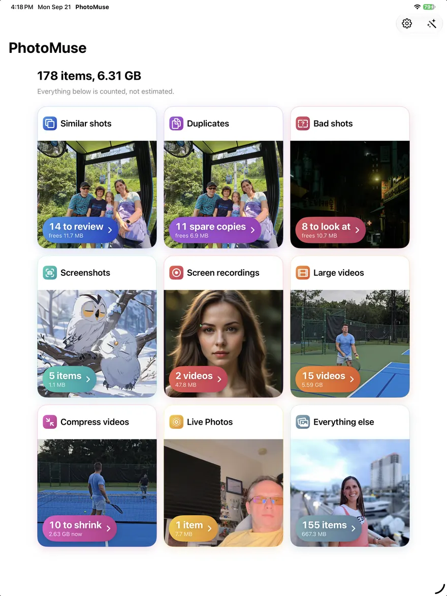
Clear the piles.
Screenshots, screen recordings, bad shots, large videos and Live Photos.
- Open a pile from the first screen.
- Tap the items you do not want. Tap a preview to see it full size first — videos and Live Photos play there.
- Use Sort to order by date, size or name. Large videos are grouped by size — over 1 GB, over 500 MB and so on — because a handful of files is usually most of the space.
- Delete, and confirm in Apple's sheet.
Bad shots are photos that are blurred, too dark, or have a finger over the lens. Glance through before deleting — a dark photo can still be one you love.
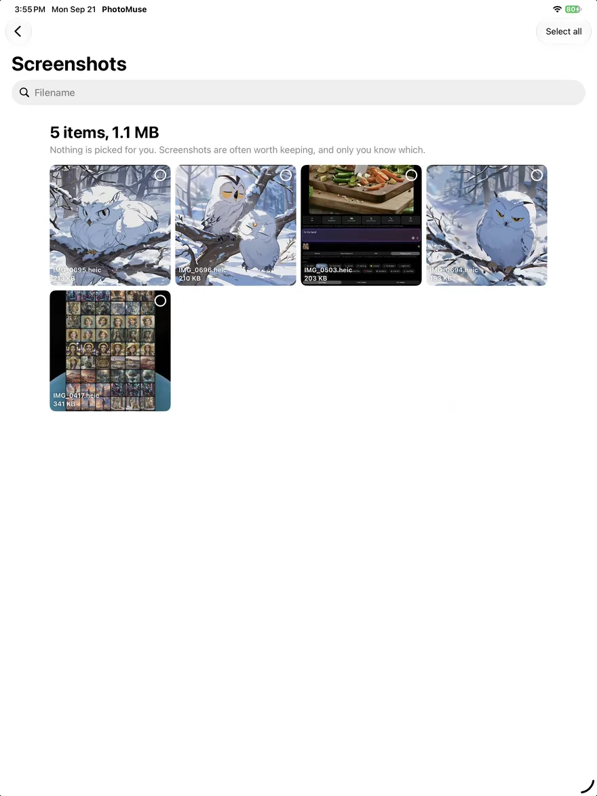
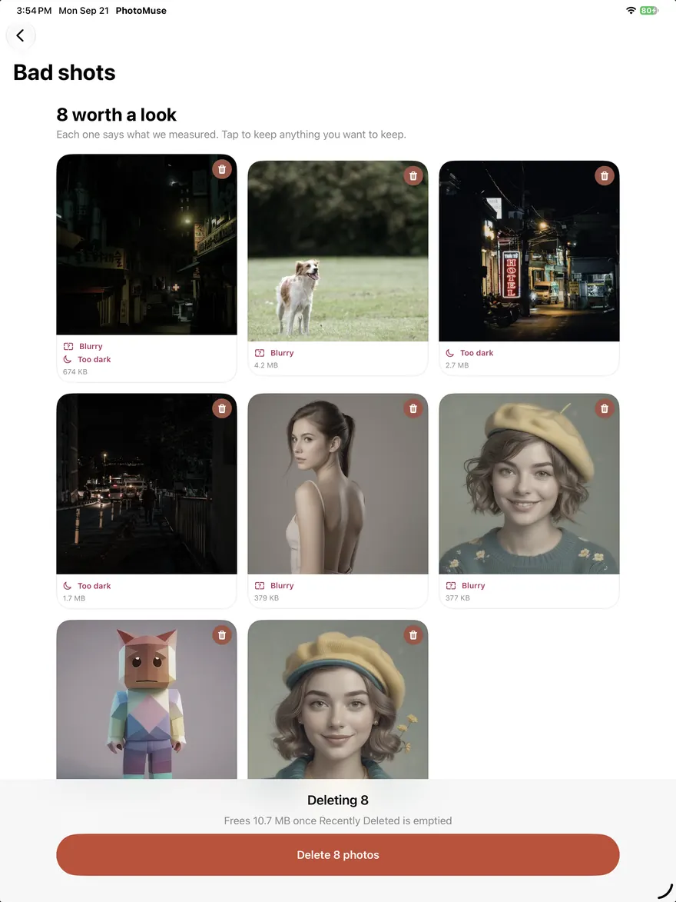
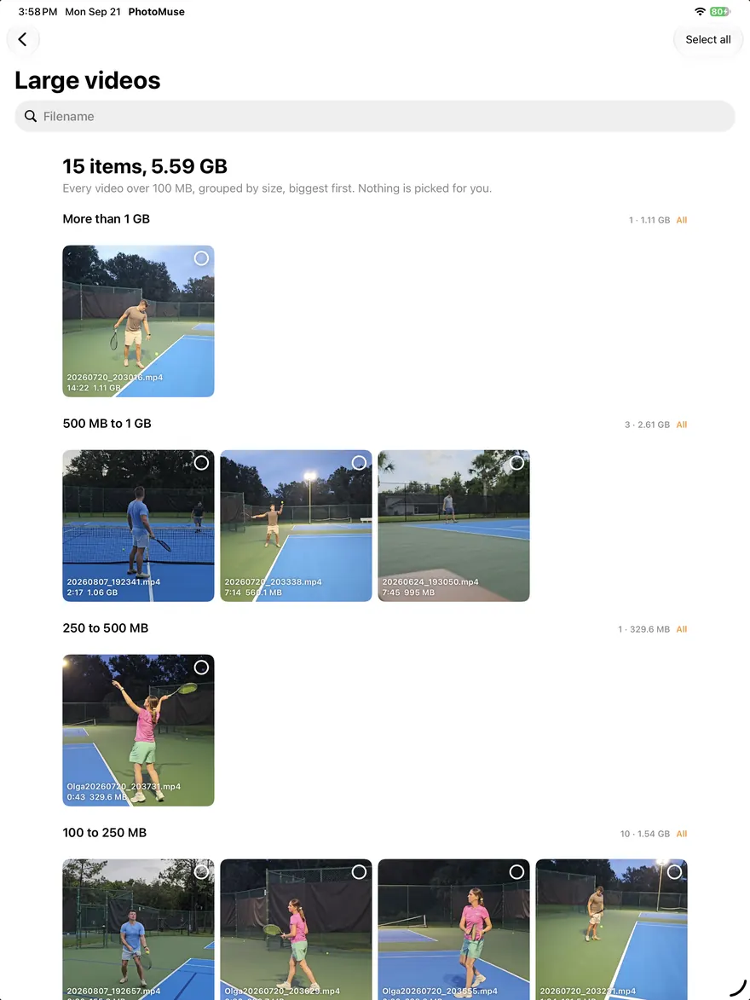
Similar shots & duplicates.
Groups of near-identical photos, with a suggested keeper.
Duplicates are the same picture more than once. Similar shots are the six tries at one group photo. Each group shows how much room the extras take.
- Keep only our pick keeps the photo PhotoMuse judges best and marks the rest.
- Keep all leaves the group alone.
- To decide yourself, tap the badge on any photo to switch it between keep and delete. Tap the photo to see it large.
An enhanced copy you saved earlier will show up next to its original here — that is correct, they are the same picture. Keep whichever you prefer.
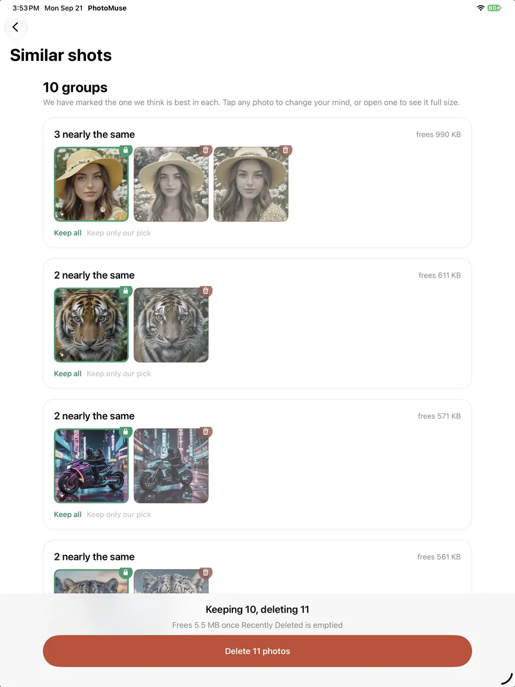
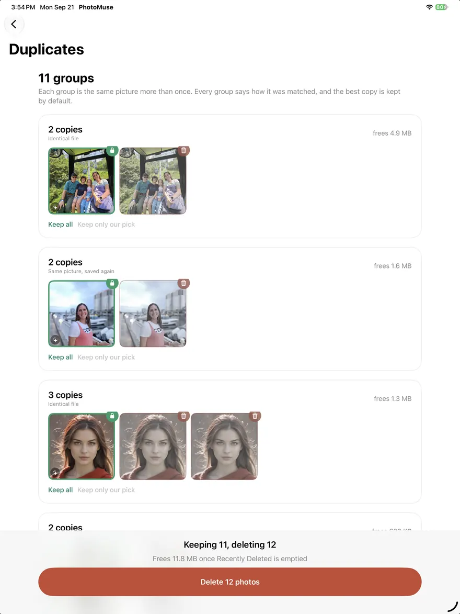
Review a month by swiping.
The fastest way through everything that is not in a pile.
- Open Everything else and choose a month.
- Swipe left to delete, right to keep. The two buttons underneath do the same.
- Made a mistake? Undo goes back one step at a time, as far as you like — even after closing the app.
- Tap Done whenever you like. Your place is saved; the month shows how many are sorted.
- At the end, review what you marked and confirm. Only then is anything deleted.
Start this month over, under More, clears the month's marks if you want a fresh run.
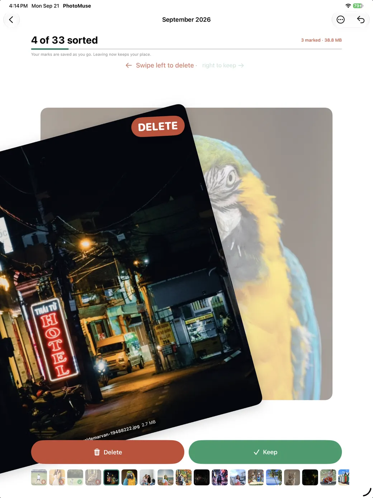
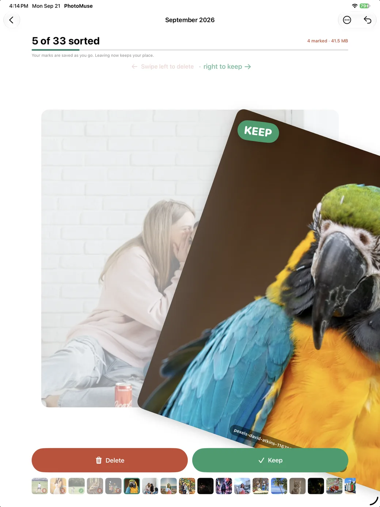
Search by what is in the photo.
Find the cat, the beach or the tennis match without scrolling.
In Everything else, type a plain word: cat, dog, beach, food, tennis, car. Photos and videos that contain it are shown.
This works by reading your photos on your device. The first read of a large library takes a while; after that, search is instant. If a word finds nothing, Search Photos instead hands the same word to Apple's Photos app.
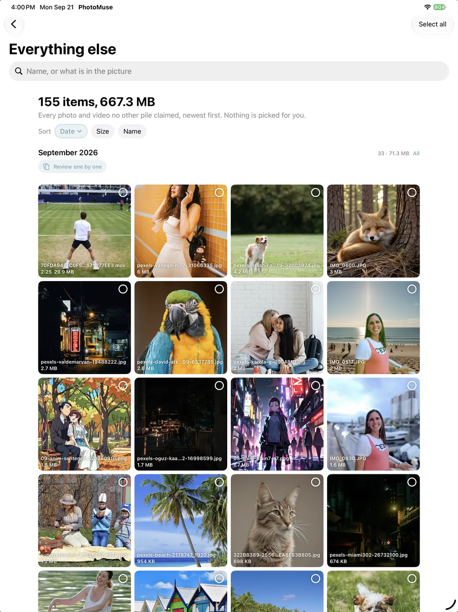
Enhance a photo.
Auto, the dials, Rebuild detail, and the two ways to save.
- Open any photo and tap Enhance — or use Enhance a photo on the first screen.
- Auto sets light and colour for that particular photo. Every dial can then be moved by hand, and Reset puts them back.
- Rebuild detail sharpens fine detail and clears compression noise. It runs on your device and takes a little while on a large photo.
- Save as a new photo, or Replace original.
Replacing is not destructive. Photos keeps the untouched original alongside the edit, exactly as it does for its own edits. To put it back: open the photo in Photos → Edit → Revert.
Live Photos can only be saved as a copy, because replacing one would drop the movement.
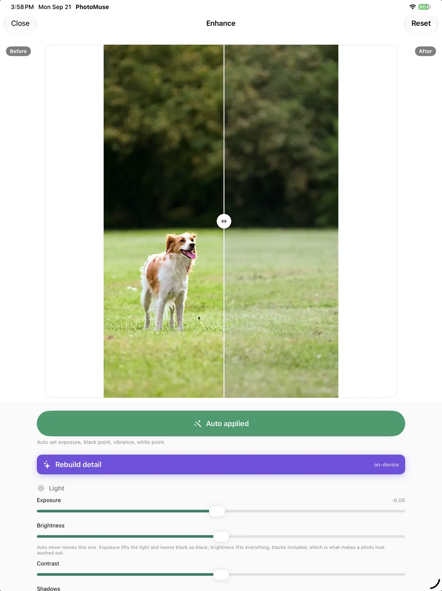
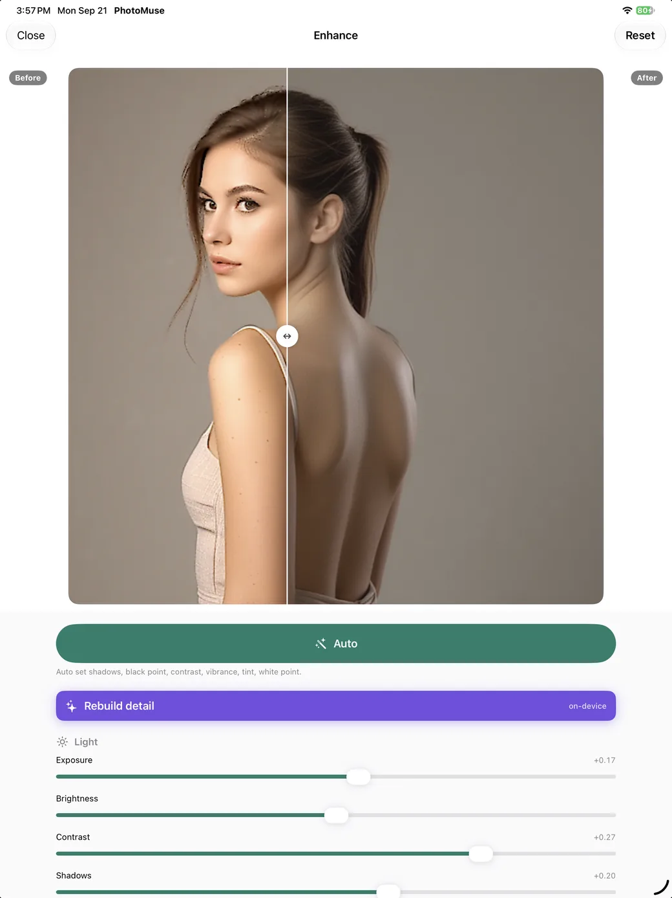
Compress videos.
Smaller files for the videos you want to keep.
Re-encoding a video that is already efficient makes it bigger, so Compress videos first asks Apple's encoder about each one and lists only those that will really shrink. Each shows its own estimate; slow-motion clips and videos that are not on the device are left alone, and the app says why.
- Pick a video and a size: the same resolution, or 1080p for anything larger.
- Wait for it to finish. You can stop at any time and nothing changes.
- See the real saving, then choose Keep both or Delete the original.
HDR video stays HDR. If the finished file is not meaningfully smaller, PhotoMuse throws it away and keeps your original.
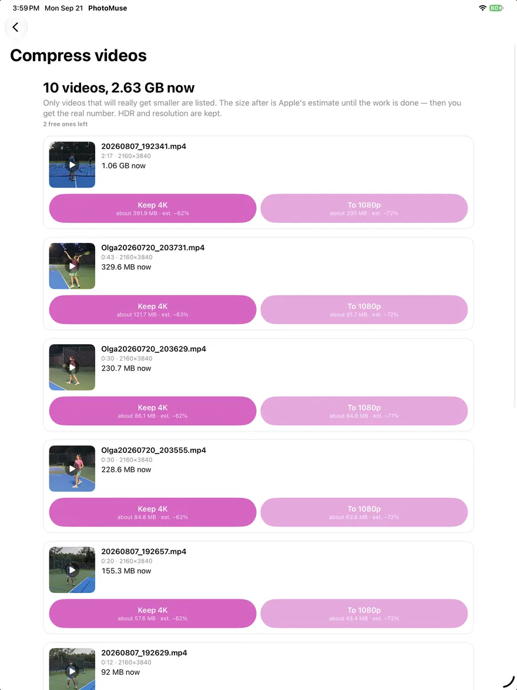
Actually free the space.
The step every cleaner app skips telling you about.
Deleting a photo — in any app, including Photos — moves it to Recently Deleted, where it stays for 30 days and still takes up room. Your storage does not change until that album is emptied.
- In PhotoMuse, open Settings → Finish freeing space in Photos. Apple gives apps no way to open that album directly, so this opens Photos with it searched for.
- In Photos, open Recently Deleted (it asks for Face ID or your passcode).
- Tap Select → Delete All.
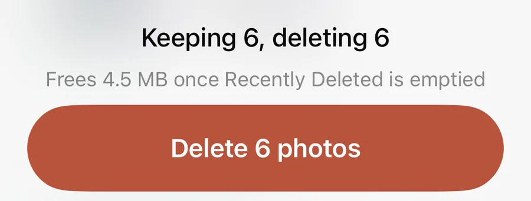
If something's not working.
The usual causes, and what to do.
- “I deleted thousands of photos and my storage did not change” — they are in Recently Deleted. See step 08.
- The piles look too small — PhotoMuse may only have access to some photos. The first screen says so; tap Change, or allow Full Access in Settings → Privacy & Security → Photos.
- “Your library has changed” — you took or deleted photos since the last scan. Tap Check again, or turn on Check again automatically in Settings.
- Enhance or Compress is slow to start — with iCloud Photos and Optimise iPhone Storage on, the full-size original is fetched from your iCloud first. Wi-Fi helps.
- A video is not offered for compression — it is already efficient, it is slow-motion, or the original is only in iCloud. The screen lists how many were left alone for each reason.
- Plans will not load on the Plus screen — that needs a connection to the App Store. Try again on Wi-Fi.
- Still stuck? Email support@novadevcodestudio.com — it reaches a person.